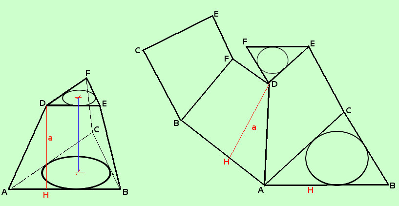

|
Se il tronco di piramide deriva da una piramide non retta allora le facce laterali dipendono dai lati del poligono di base, ma hanno altezze diverse e quindi dovremo calcolare le aree delle facce una ad una Quindi possiamo scrivere
Per la superficie totale dovremo aggiungere le due aree di base
 Molto di piu' si puo' dire se il tronco deriva da una piramide retta: in tal caso abbiamo che tutti i trapezi laterali hanno la stessa altezza (in figura indicata con a) (approfondire?), pertanto potremo scrivere
e, anche qui, per la superficie totale bastera' aggiungere le due aree di base
Si potrebbero scrivere formule piu' compatte evidenziando i perimetri di base, ma perche' complicarci la vita? Secondo me e' piu' semplice fare i calcoli cosi' |

|

|

|

|